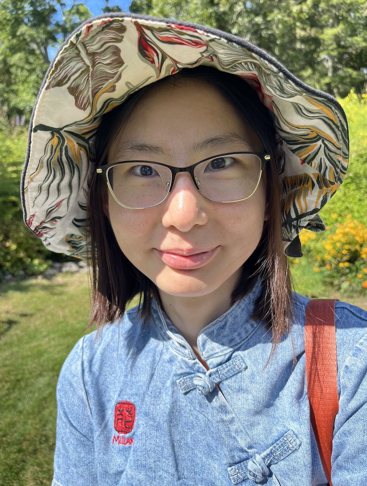

I am a J.J. Sylvester Assistant Professor at Johns Hopkins University.
I received my Ph.D. in Mathematics from Yale University in May 2026, advised by Ivan Losev.
I work in geometric representation theory and symplectic geometry, with an emphasis on modules over quantizations and involutions of quiver varieties.
Email: m.hu@jhu.edu
Office: Krieger 311
Here is my CV.